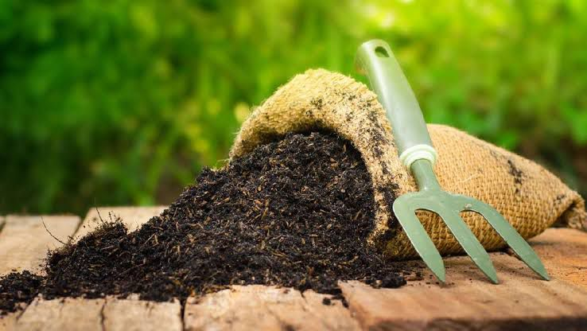
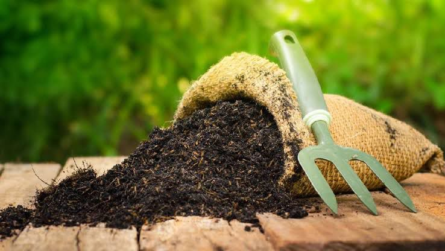

Selamat Datang di Website Edukasi RW 07
Temukan cara-cara kreatif dan bermanfaat untuk mengolah sampah rumah tangga menjadi sesuatu yang berguna dan bernilai.
"Dari Edukasi ke Aksi, RW.07 Lebih Bersih!"
 



Metode Pengolahan Sampah Unggulan
POC (Pupuk Organik Cair): Mengolah limbah dapur menjadi pupuk cair yang kaya nutrisi untuk tanaman.
Kompos: Menyulap dedaunan dan sampah organik menjadi kompos penyubur tanah.
Lilin dari Minyak Jelantah: Membuat lilin hemat energi dari minyak bekas yang tak lagi terpakai.
Paving Blok dari Plastik: Mencetak sampah plastik menjadi bahan bangunan alternatif yang ramah lingkungan.
üíß Ayo Mulai dari Rumah!
Ubah sampah jadi berkah. Dari rumah, kita mulai perubahan! ♻️✨
üîç Lihat Langkah-langkah